Data-Driven Turnaround Strategy | 2019 - 2024
Author: Aftab Ahmad
Date: 26 February, 2026
Contact: aftabajk@gmail.com
This project is a data-driven turnaround strategy for Bharat Herald, a legacy newspaper established in 1956. By analyzing operational data from 2019 to 2024, I have developed a roadmap to transition the organization from a declining print model to a high-efficiency digital future. This project is part of the Codebasics Resume Challenge.
For seven decades, Bharat Herald was a dominant voice in regional journalism. However, the post-2019 landscape brought an existential crisis: a 25.06% overall print decline and an alarming 3.35M cumulative print waste in under-monetized cities like Varanasi. A failed 2021 digital pilot left the company struggling to find its footing in a mobile-first world.
The stakeholder for this comprehensive data assessment report is Tony Sharma Executive Director of Bharat Herald.
The core challenge is a "Death Spiral" of declining circulation and inefficient ad spending. The objective is to identify how Bharat Herald can cut operational waste, reclaim advertiser trust in key sectors like Real Estate, and successfully relaunch its digital platforms in high-readiness markets
The dataset has been sourced from the Codebasics website. Data for this assement analysis is open access to the public for data analysis and insight generation, making it a valuable educational resource. You can access the data here.
Data dictionary for each data segment can be accessed here .
An integrated star-schema data model that unifies print, revenue, digital engagement, and city-level metrics through shared dimensions enabling consistent, cross-functional, and time-based performance analysis.
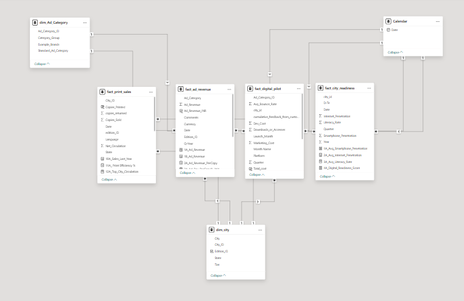
I conducted a comprehensive analysis using Powerbi to address the primary and secondary questions posed by the stakeholders. During this process, I identified several key insights that were instrumental in answering these critical questions.
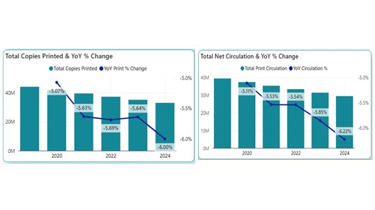
Structural decay is evident as Net Circulation (-6.22%) is falling faster than production can be reduced, making the digital transition an immediate necessity.
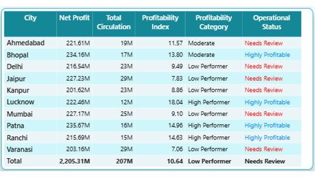
High-volume hubs like Varanasi and Jaipur are flagged as "Low Performers" due to poor margins, while smaller markets like Patna and Lucknow drive sustainability with higher net profits.
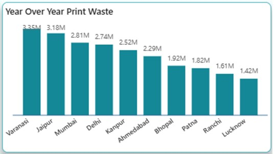
Varanasi (3.35M) and Jaipur (3.18M) exhibit the largest cumulative waste gaps, signaling that the "cost of reach" in legacy cities is becoming unsustainable.
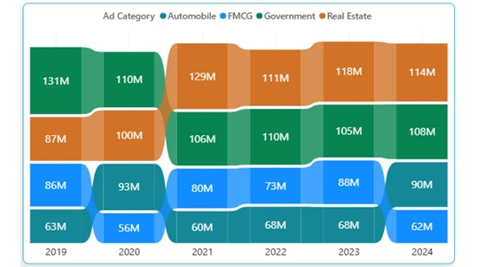
Government ad dominance has plummeted, replaced by Real Estate as the top category at ₹114M by 2024, while FMCG shows strong recovery resilience.
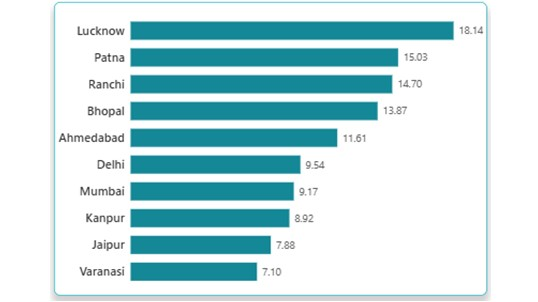
Lucknow leads with a superior ₹18.14 ad revenue per copy, significantly outperforming legacy markets like Varanasi (₹7.10) in per-copy profitability.
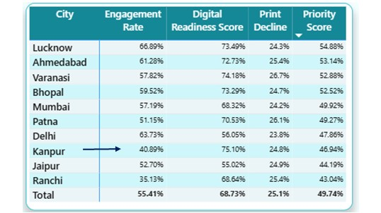
Kanpur possesses the highest digital readiness (75.10%) but the lowest pilot engagement (~40%), indicating failures due to UX friction rather than a lack of technology.
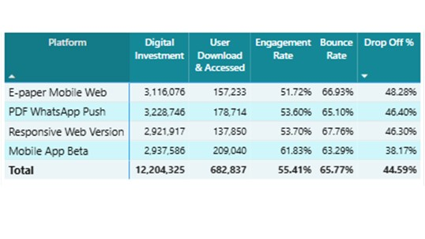
The Mobile App Beta outperformed all other channels, achieving the highest active access with 209K users and the lowest drop-off rate of 38.17%.
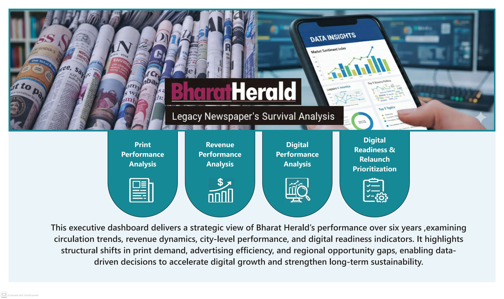
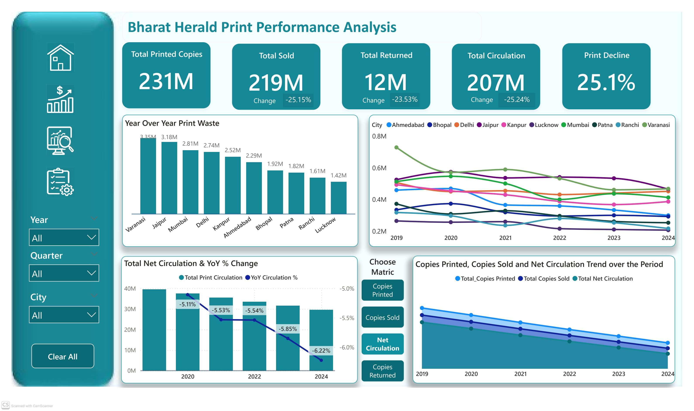
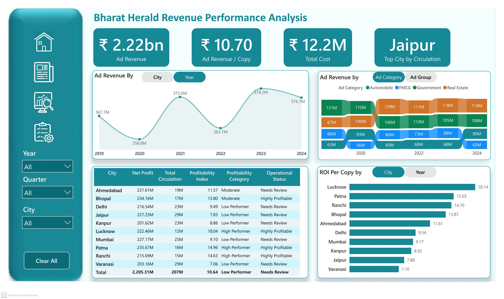
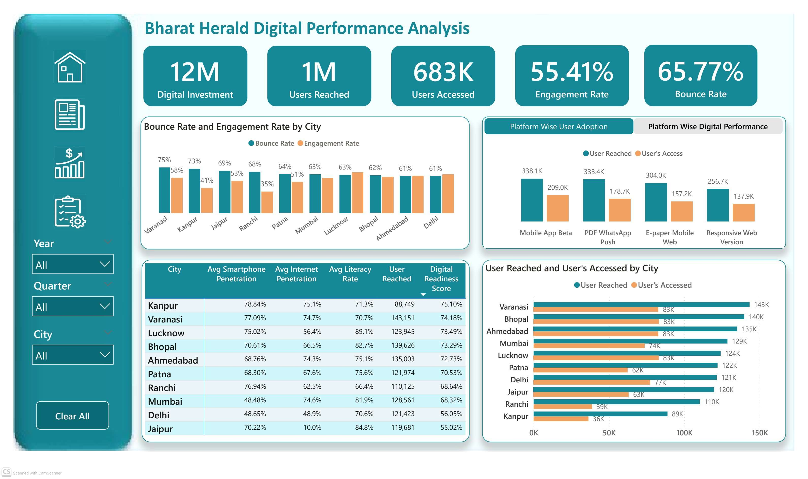
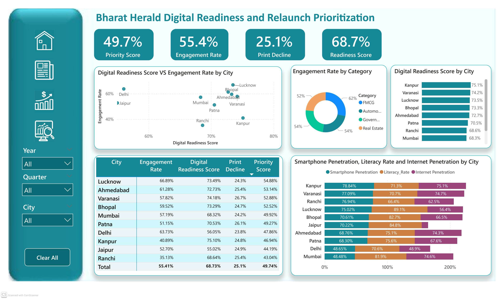
Bharat Herald’s survival depends on evolving from a "Mass Reach" organization to a "High-Value Engagement" entity. By replicating the high-margin Lucknow Model and removing digital friction in high-readiness cities, Bharat Herald can successfully transition its 70-year legacy into the modern mobile era. Thank you for taking the time to read my analysis report on Bharat Herald a legacy newspaer. I would greatly appreciate your feedback and suggestions regarding this analysis report. Your input is invaluable in helping me refine and improve my work. Please feel free to share your thoughts by DM me on LinkedIn.
Feedback: aftabajk@gmail.com